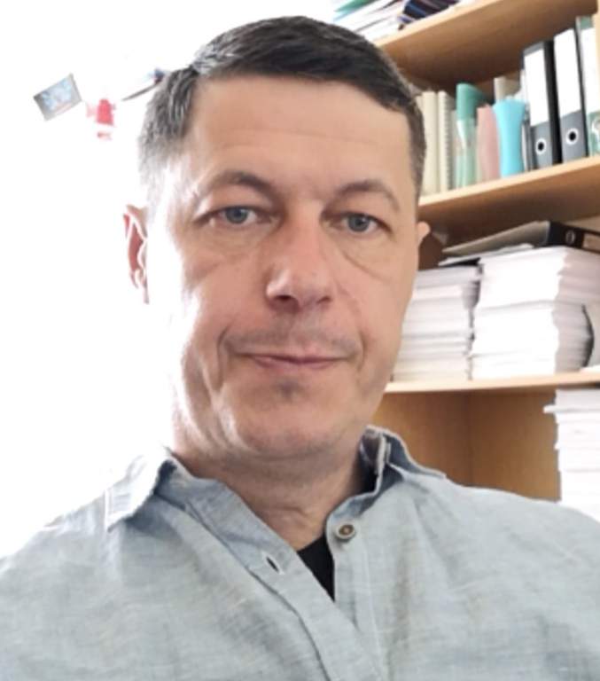
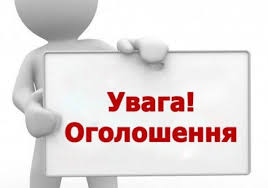
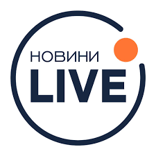

Доцент кафедри

Email: firsov@umsf.dp.ua
Телефон: +380000000000
У 1996 році закінчив Дніпропетровський державний університет за спеціальністю «Фізика» та спеціалізацією «Автоматизація фізичного експеримента». У 2001 році закінчив аспірантуру за спеціальністю 01.05.02, а у 2003 отримав науковий ступінь кандидата фізико-математичних наук за тією ж спеціальністю, захистивши дисертацію на тему: «Моделі і методи паралельних упорядкувань». У 2004 році пройшов навчання на факультеті підвищення кваліфікації ННГУ ім. Лобачевського. У 2005 році працював на посаді доцента кафедри Системного аналізу та управління НГУ У 2006 році отримав вчене звання доцента кафедри обчислювальної математики та математичної кібернетики ФПМ ДНУ. У 2010 році працював на кафедрі Медико-біологічної фізики і інформатики ДДМА. З 2012 року працював в Академії митної служби України на кафедрі транспортних технологій та міжнародної логістики. У 2022 році в Університеті митної справи та фінансів здобув кваліфікацію: ступінь вищої освіти магістр за спеціальністю 275 «Транспортні технології»
“Візуальне програмування”, “Чисельні методи”, “Операційні системи”, “Фізика”, “ASP.NET”, “Керування вимогами до ПЗ”, “WEB – технології”, “Технічне обслуговування АТЗ”, “Системний аналіз”, “Технічна експлуатація АТЗ”, “Транспортна логістика”, “Моделювання транспортних систем”, “Автоматизовані системи керування”. Здійснював керівництво випускними кваліфікаційними роботами бакалаврів та магістрів
Понеділок — 10:00
Вівторок — 10:00
Середа — 10:00
Четвер — 10:00
П'ятниця — 10:00

Зміни в розкладі занять
Консультація у п'ятницю

Новий курс додано